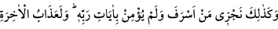
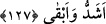
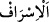

ettin.
“Bugün de aynı şekilde” yâni senin dünyadaki unutman gibi “sen unutuluyorsun!”
uygun bir karşılık olarak körlük ve azab içinde terk olunursun. Ancak bu körlük
söylendiği gibi ebediyyen devam etmeyecektir. Allâh’ın dilediği kadar devam edecek,
sonra Allah kıyâmetin korkulu hallerini görmesi ve cehennemdeki yerini müşâhede
etmesi için onun körlüğünü giderecektir. Böylece bu onun için azâb üstüne azâb
olacaktır. ”Onların kör, dilsiz ve sağır bir halde yüzükoyun haşredilmeleri” (bk. el-
İsrâ, 17/97) de aynı şekildedir. Allah bu iki durumu da onlardan izâle edecektir.
Nitekim âyette şöyle buyrulur: “Onlar, bizim huzurumuza çıkacakları gün ne iyi
duyarlar ve ne iyi görürler.” (Meryem, 19/38)
127. Doğru yoldan sapanı ve Rabbinin âyetlerine inanmayanı işte böyle
cezalandırırız. Ahiret azabı, elbette daha şiddetli ve daha süreklidir.
“Doğru yoldan sapanı” isyanında haddi aşanı “ve Rabbinin âyetlerine” Kur’an’a ve
diğer mûcizelere “inanmayanı” bilakis onları yalanlayıp onlardan yüz çevirenleri “işte
böyle” işlediği günaha uygun bir cezâ ile “cezâlandırırız.”
“
”; her ne kadar harcama konusunda daha meşhur olsa da aslında insanın yaptığı
her fiilde haddi aşmasıdır.
Mutlak olarak “Ahiret azâbı,” ya da cehennem ateşi “elbette” geçim darlığı ve
benzeri sıkıntılar gibi dünyada onları uğrattığımız azabdan “daha şiddetli ve” kesintiye
uğramadığı için “daha süreklidir.” Kim Allâh’ın azabından kurtulmayı ve sevabına nail
olmayı dilerse, Allâh’a itâat uğrunda dünyada karşılaşacağı zorluklara sabretmeli,
günahlardan sakınmalı ve dünyevî hazlardan uzak durmalıdır. Çünkü cennet kişiye
yapması güç gelen zorluklarla, cehennem de arzu ve şehvetlerle çevrilmiştir. Nitekim
bir hadiste şöyle buyrulmuştur:
“Allah Teâlâ Cebrâil (a.s.)’ı çağırdı ve onu cennete gönderdi. “Cennete ve orada
cennetlikler için hazırladıklarıma bir bak.” buyurdu. Cebrâil gidip geldi ve: “Senin
izzetine yemin olsun, onu işitip de ona girmeyen kalmayacak, herkes ona girecek.”
dedi.
(Allah Teâla) cennetin etrafını hoşa gitmeyecek şeylerle çevirdi. Sonra: “Git ona
bir daha bak!” buyurdu.
Cebrâil (a.s.) gidip ona bir daha baktı. Sonra: “Korkarım, ona hiç kimse
girmeyecek.” dedi.
Sonra onu cehenneme gönderdi ve: “Cehennem ve cehennem ehli için
hazırladıklarıma bir bak.” buyurdu.